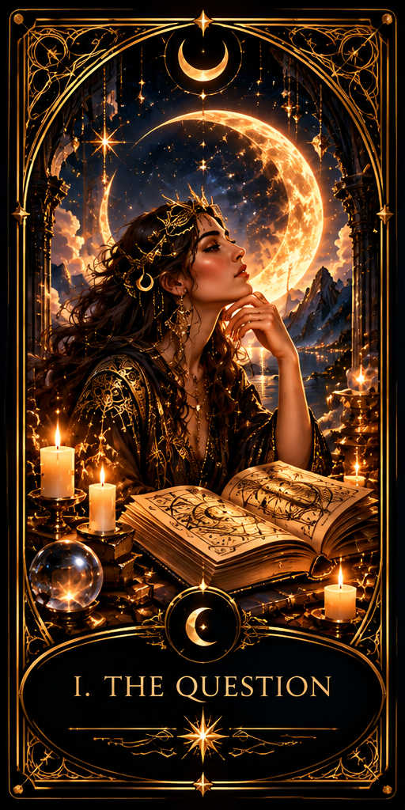
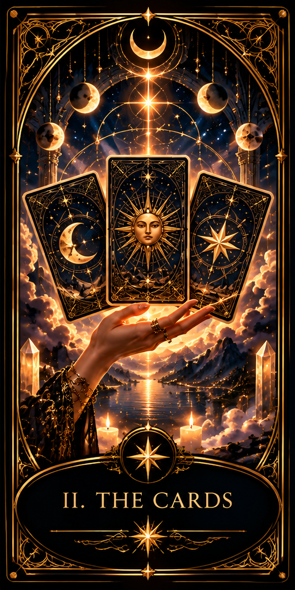
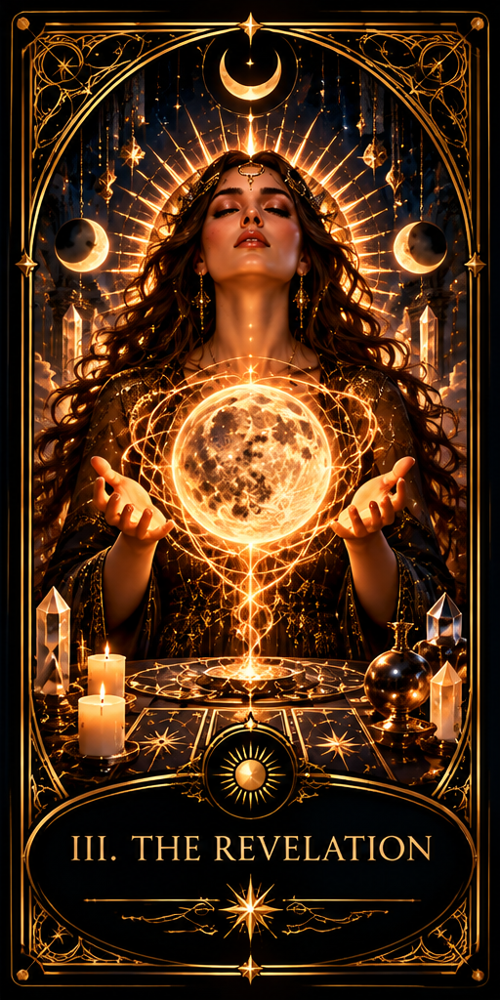

Four Paths. Infinite Possibilities.
What Does Your Heart Seek?
Choose the path that resonates with your question.
The Lunara Experience
A Ritual of Discovery
Three simple steps. One deeply personal experience.

I. The Question
Share what is on your mind and choose the focus of your journey.

II. The Cards
Discover seven tarot cards, each carrying its own symbolism and meaning.

III. The Revelation
Receive a thoughtful interpretation inspired by your cards and personal question.

THE SANCTUARY AWAITS
Your Story Is Still Unfolding.
Seven cards. One question. A moment devoted entirely to you. Step beyond the everyday and discover the stories hidden in timeless symbols.
$9.99
Seven cards. One question. A reading shaped around your journey.
Preview only — payments are not enabled.